Geomorfología Glacial y Periglacial#
Este documento explora la geomorfología de los ambientes dominados por el hielo, tanto en el presente como en el pasado geológico, con un enfoque en los procesos que esculpen el paisaje y las geoformas resultantes [Benn and Evans, 2010].
Important
Objetivos de aprendizaje:
Comprender la dinámica de los glaciares como sistemas de balance de masa.
Identificar y diferenciar geoformas de erosión (circos, valles en U) y acumulación (morrenas, till).
Explicar las causas astronómicas y terrestres de las glaciaciones (Ciclos de Milankovitch).
Analizar la situación actual de los glaciares tropicales en Colombia y las evidencias de glaciaciones pasadas.
1. Definición de un Glaciar#
Un glaciar es una gran masa de hielo perenne, formada por la compactación y recristalización de la nieve, que se acumula sobre la superficie terrestre y muestra evidencia de movimiento (flujo) pendiente abajo debido a la gravedad [Benn and Evans, 2010].
{kind=link}
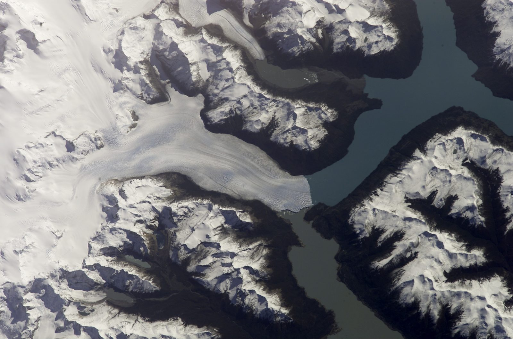
Fig. 31 Glaciar Perito Moreno, en la Patagonia argentina, un glaciar de valle en movimiento constante. Fotografía astronauta ISS004, Wikimedia Commons (NASA, dominio público).#
{kind=link}
2. Diferencia: Glaciar vs. Glacial#
Glaciar (Sustantivo): Es la masa de hielo en sí misma. Ejemplo: “El glaciar está retrocediendo.”
Glacial (Adjetivo): Es la palabra que describe cualquier proceso o geoforma relacionado con, o causado por, la acción de los glaciares. Ejemplo: “Ese valle en U es una geoforma glacial.”
3. Alta Montaña Tropical y Ambientes (Peri)Glaciales#
Los trópicos de alta montaña (como los Andes) son laboratorios únicos. A pesar de su baja latitud, la altitud extrema permite la existencia de ambientes glaciales y periglaciales [Rabatel et al., 2013].
Ambientes Actuales: Pequeños glaciares (casquetes) y zonas periglaciales activas (con ciclos de hielo-deshielo diarios) se encuentran por encima del límite de bosque, en los páramos y superpáramos.
Ambientes Heredados (Legacy): Durante las glaciaciones del Cuaternario, la Línea de Equilibrio (EQL) descendió significativamente. Esto significa que vastas áreas que hoy son páramos estuvieron cubiertas por hielo. Las morrenas, valles en U y lagos que vemos en los parques nacionales (ej. El Cocuy, Los Nevados) son geoformas heredadas de esa actividad glacial pasada.
{kind=link}
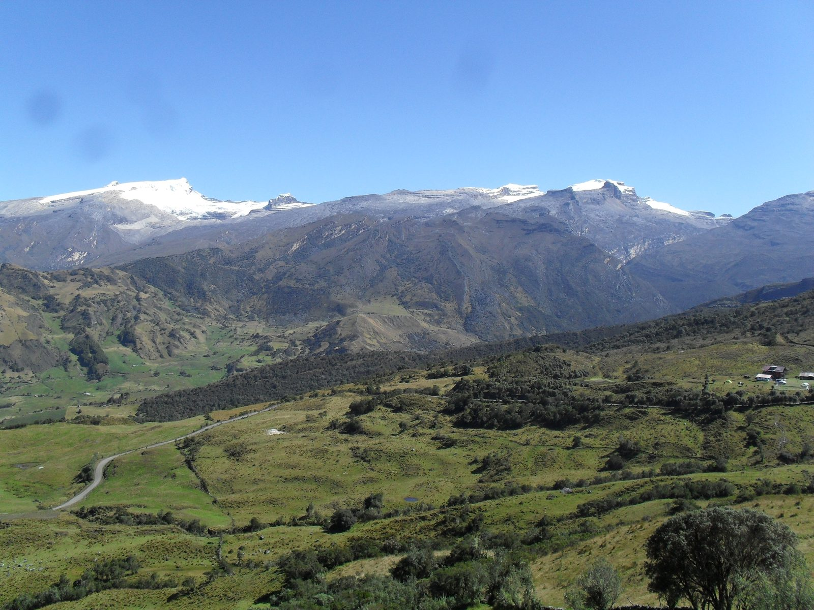
Fig. 32 Páramo de la Sierra Nevada del Cocuy (Boyacá, Colombia), un paisaje de alta montaña tropical que conserva geoformas heredadas de glaciaciones pasadas. Fotografía: Petruss, Wikimedia Commons (CC BY-SA 3.0).#
{kind=link}
4. El Origen de las Glaciaciones#
Las glaciaciones son periodos en los que los casquetes de hielo continentales se expanden significativamente. Su origen es una interacción compleja de factores externos e internos.
4.1. Causas Externas (Forzamiento Astronómico)#
Teoría de Milankovitch#
Esta teoría postula que las variaciones cíclicas en la órbita de la Tierra alteran la cantidad y distribución de la insolación (energía solar) que recibe el planeta, controlando el inicio y fin de los periodos glaciales. Su confirmación empírica, a partir de registros isotópicos en sedimentos marinos, es uno de los resultados más sólidos de la paleoclimatología [Hays et al., 1976]. Se compone de tres ciclos:
Excentricidad (Ciclo de ~100 000 y 413 000 años): Es el cambio en la forma de la órbita terrestre, de ser casi circular a ser más elíptica. Una mayor excentricidad provoca veranos más fríos e inviernos más cálidos (o viceversa), afectando la acumulación de nieve.
Oblicuidad (Ciclo de ~41 000 años): Es el cambio en la inclinación del eje de la Tierra (entre 22.1° y 24.5°). Una mayor inclinación provoca estaciones más extremas (veranos más cálidos, inviernos más fríos). Una menor inclinación favorece la acumulación de hielo, al tener veranos más frescos que no derriten la nieve del invierno anterior.
Precesión (Ciclo de ~23 000 años): Es el “bamboleo” del eje de la Tierra. Determina en qué punto de la órbita ocurren las estaciones. Afecta si el verano del hemisferio norte ocurre cuando la Tierra está más cerca (perihelio) o más lejos (afelio) del sol.
{kind=link}
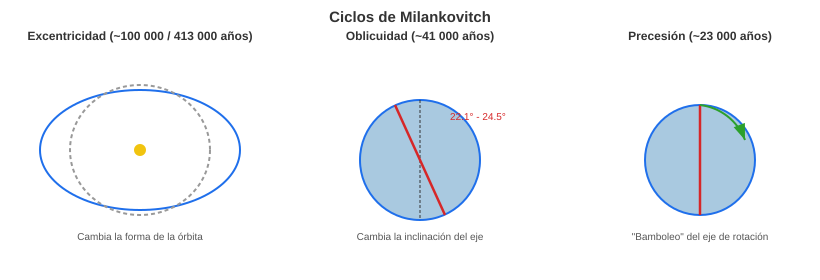
Fig. 33 Los tres ciclos orbitales de Milankovitch: excentricidad, oblicuidad y precesión. Elaboración propia con base en Hays et al. [1976].#
Otros Factores Externos#
Tormentas Solares (Actividad Solar): Variaciones en la irradiancia solar total (ej. Mínimo de Maunder) pueden causar fluctuaciones climáticas a corto plazo (como la Pequeña Edad de Hielo), pero no se consideran el motor principal de las grandes glaciaciones.
4.2. Causas Internas (Dinámica Planetaria)#
Tectónica de Placas: La configuración continental es clave. La apertura o cierre de pasos oceánicos (ej. Paso de Drake, Istmo de Panamá) altera la circulación oceánica global. El levantamiento de mesetas (ej. Tíbet, Altiplano) cambia los patrones de circulación atmosférica e incrementa el albedo.
Gases de Efecto Invernadero (CO₂): A escalas geológicas, el CO₂ es controlado por el vulcanismo (fuente) y el metamorfismo/meteorización de silicatos (sumidero). Periodos de bajo CO₂ (como el Cenozoico tardío) permiten el enfriamiento global.
Actividad Humana: En la escala actual, las emisiones antropogénicas de CO₂ y metano son el forzamiento climático dominante, causando un calentamiento rápido que revierte la tendencia de enfriamiento de los últimos milenios.
4.3. Proxies Paleoclimáticos y Temperatura Pasada#
Para estimar la temperatura pasada se usan “proxies” (indicadores indirectos):
Testigos de Hielo: Las burbujas de aire atrapadas en el hielo de Groenlandia y la Antártida dan una muestra directa de la composición atmosférica (CO₂).
Isótopos de Oxígeno (\(\delta^{18}\)O):
En hielo: La relación \(\delta^{18}\)O/\(\delta^{16}\)O en el hielo indica la temperatura local de la atmósfera en el momento de la nevada.
En foraminíferos (sedimentos marinos): La relación \(\delta^{18}\)O en sus conchas de carbonato refleja la temperatura del agua del océano y, crucialmente, el volumen global de hielo (el \(\delta^{16}\)O queda “atrapado” en los glaciares).
Estos proxies muestran que la Tierra ha oscilado entre estados “Invernadero” (Hothouse) y “Nevera” (Icehouse). Actualmente estamos en un estado de “Nevera” (con hielo en los polos) que comenzó en el Cenozoico.
5. Glaciaciones y el Período Cuaternario#
El Cuaternario (últimos 2.58 millones de años) es el periodo geológico que habitamos, caracterizado por ciclos glaciales-interglaciales recurrentes, impulsados por los ciclos de Milankovitch. Se divide en:
Pleistoceno: La “Edad de Hielo”. Comprende la mayoría del Cuaternario, con múltiples expansiones (glaciales) y contracciones (interglaciales) de los hielos.
Holoceno: Los últimos ~11 700 años. Es el periodo interglacial cálido actual.
{kind=link}
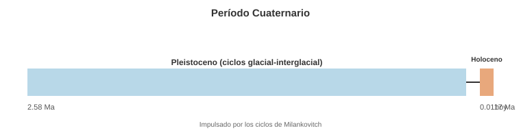
Fig. 34 El período Cuaternario y su división en Pleistoceno y Holoceno. Elaboración propia.#
6. Tipos de Glaciares#
6.1. Glaciares de Montaña (Altitudinales)#
Están confinados por la topografía.
Glaciar de Circo: Ocupa una depresión en forma de cuenco en la ladera de una montaña.
Glaciar de Valle: Un glaciar de circo que crece y fluye valle abajo, confinado por las laderas del valle.
Casquete de Hielo (Ice Cap): Cubre una zona de tierras altas (ej. un volcán), fluyendo radialmente desde un domo central. (Este es el tipo predominante en Colombia).
6.2. Glaciares Continentales (Latitudinales)#
No están confinados por la topografía; la cubren por completo.
Mantos de Hielo (Ice Sheets): Masas de hielo a escala continental (ej. Antártida, Groenlandia). Fluyen radialmente desde un centro de acumulación.
{kind=link}
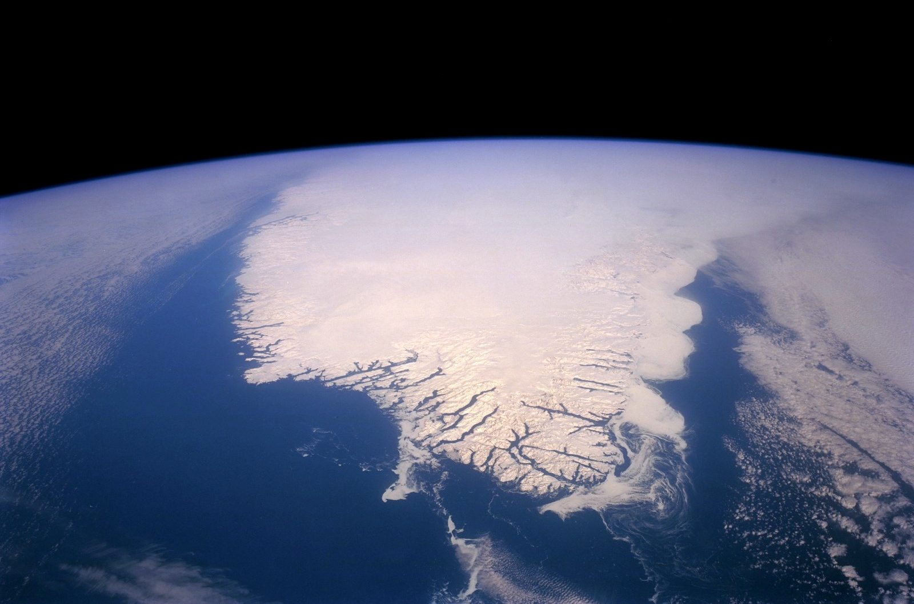
Fig. 35 Superficie del manto de hielo de Groenlandia (ice sheet), un glaciar continental que cubre por completo la topografía subyacente. Imagen: NASA/USGS, Wikimedia Commons (dominio público).#
{kind=link}
7. Anatomía de un Glaciar#
Un glaciar es un sistema de balance de masa:
Zona de Acumulación: La parte superior del glaciar donde la ganancia de nieve invernal supera la pérdida de hielo en verano. Aquí el hielo fluye hacia abajo.
Zona de Ablación: La parte inferior donde la pérdida de hielo (por derretimiento, sublimación, desprendimiento) supera la ganancia de nieve.
Línea de Equilibrio (EQL): La línea imaginaria que separa ambas zonas. Si la EQL sube, el glaciar retrocede; si baja, avanza.
{kind=link}
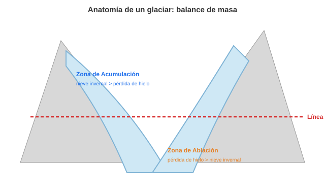
Fig. 36 Zonas de acumulación y ablación de un glaciar, separadas por la Línea de Equilibrio (EQL). Elaboración propia con base en Benn and Evans [2010].#
8. Procesos de Erosión y Transporte Glacial#
Procesos de Erosión#
Abrasión: El “lijado” del lecho rocoso. Los sedimentos (arena, rocas) incrustados en la base del glaciar actúan como papel de lija, puliendo y creando estrías glaciales en la roca.
Arranque (Plucking o Quarrying): El “arranque” de bloques de roca. El agua de deshielo subglacial se infiltra en las fracturas de la roca, se congela (regelación), y al avanzar el glaciar, “arranca” estos bloques y los incorpora a su base.
{kind=link}
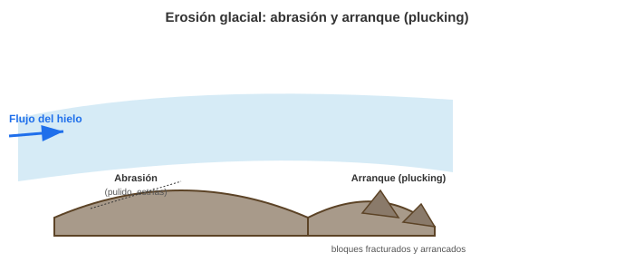
Fig. 37 Abrasión (pulido) en la cara expuesta al flujo del hielo y arranque (plucking) en la cara opuesta de un afloramiento rocoso. Elaboración propia con base en Benn and Evans [2010].#
Proceso de Transporte#
El sedimento transportado por un glaciar se llama Till (o derrubio glacial) y se caracteriza por ser muy mal seleccionado (mezcla caótica de arcilla, arena y grandes bloques).
Transporte Supraglacial: Sobre la superficie.
Transporte Englacial: Dentro del hielo.
Transporte Subglacial: En la base del hielo.
9. Geoformas de Erosión Glacial (Típicamente en la Zona de Acumulación)#
Estas geoformas son esculpidas por el hielo sobre la roca madre.
Circo Glacial: Anfiteatro o cuenco en forma de silla de brazos, excavado en la cabecera de un valle.
Tarn (o Ibón): Lago que ocupa la depresión de un circo glacial después de que el hielo se retira.
{kind=link}
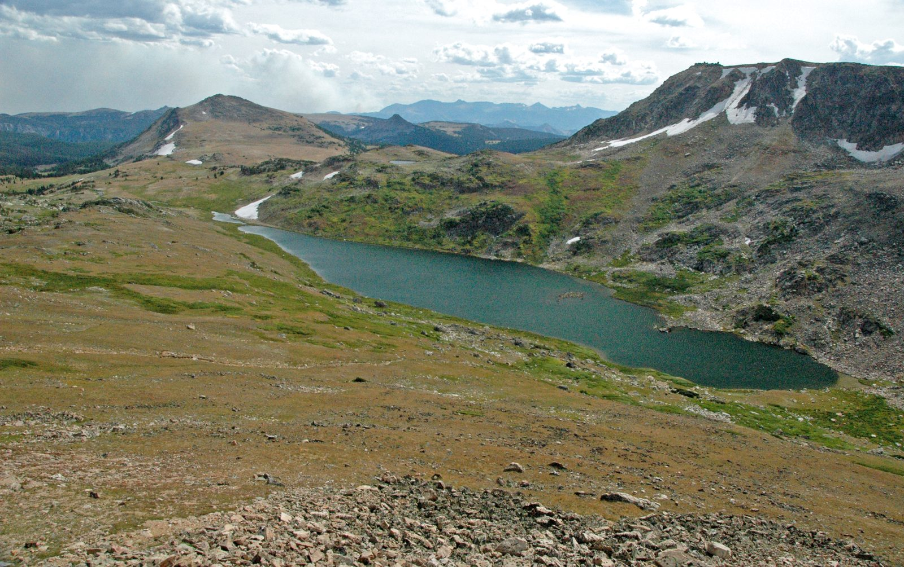
Fig. 38 Circo glacial con su tarn (Gardner Lake, montañas Beartooth, Wyoming, EE. UU.). Fotografía: James St. John, Wikimedia Commons (CC BY 2.0).#
_1.jpg){kind=link}
Arête (Arista): Cresta afilada y dentada que separa dos circos o valles glaciales adyacentes.
Col (Collado): Un paso bajo o “silla de montar” en una arista, formado por la erosión regresiva de dos circos opuestos.
Horn (Pico Piramidal): Pico agudo y piramidal formado por la intersección de tres o más circos (ej. el Cervino/Matterhorn).
{kind=link}
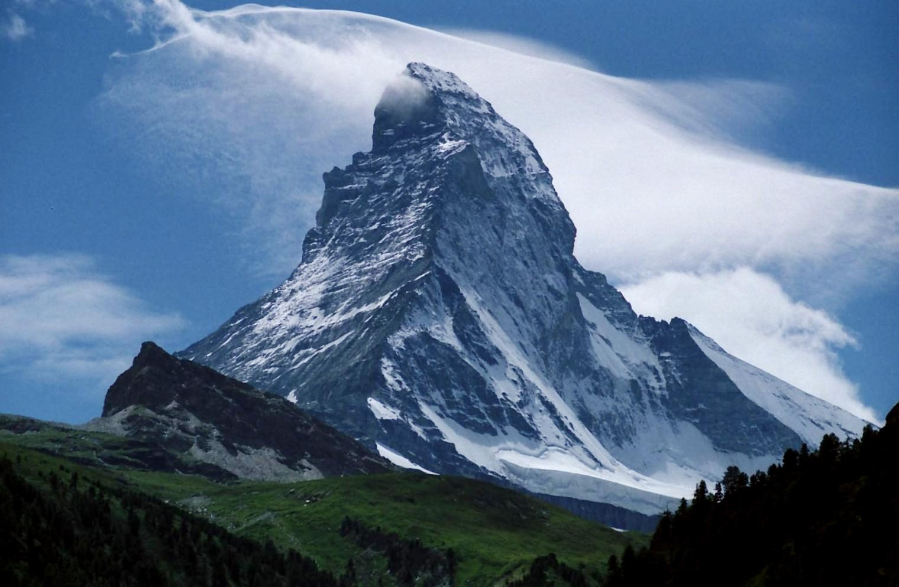
Fig. 39 El Cervino (Matterhorn), en los Alpes suizos, un horn formado por la intersección de varios circos glaciales. Wikimedia Commons (dominio público).#
{kind=link}
Valle en U: Perfil transversal característico de un valle que ha sido ensanchado y profundizado por un glaciar de valle.
{kind=link}
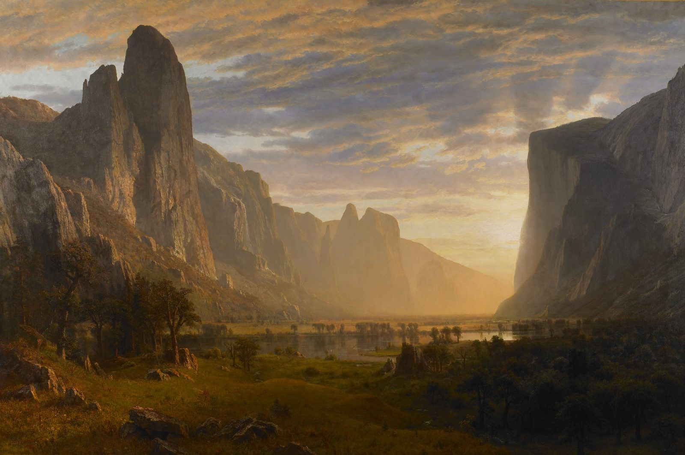
Fig. 40 El valle de Yosemite (California, EE. UU.), un ejemplo clásico de valle en U tallado por un glaciar. Pintura de Albert Bierstadt, Wikimedia Commons (dominio público).#
{kind=link}
Lagos Paternoster: Una cadena de lagos escalonados en un valle glaciar, ocupando depresiones excavadas por el glaciar.
{kind=link}
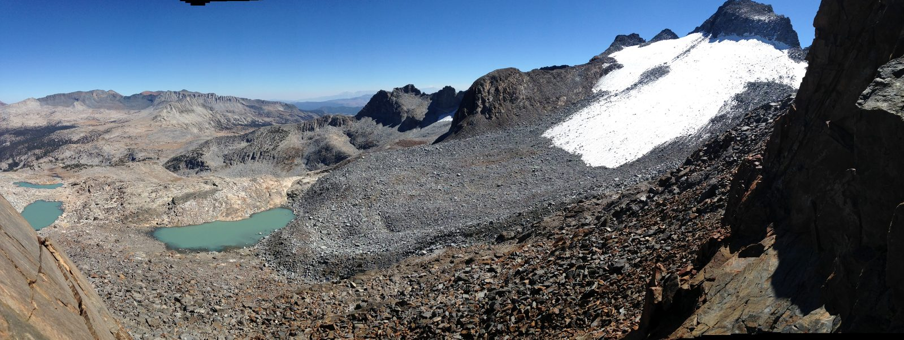
Fig. 41 Lagos paternoster junto al glaciar Lyell (EE. UU.), una cadena de lagos escalonados en un valle glacial. Fotografía: NPS, Wikimedia Commons (dominio público).#
.jpg){kind=link}
10. Geoformas de Acumulación Glacial (Morrenas)#
Formadas por el depósito directo de till no estratificado por el hielo.
Morrena Terminal (o Frontal): Una cresta de till depositada en el hocico (frente) del glaciar, marcando su máxima extensión.
Morrena Lateral: Crestas de till acumuladas a los lados del glaciar.
Morrena Central (o Medial): Una cresta de till en el centro de un glaciar, formada por la unión de las morrenas laterales de dos glaciares de valle tributarios.
Morrena de Fondo (Ground Moraine): Una capa de till depositada bajo el glaciar, formando una llanura ondulada.
Morrenas de Recesión: Crestas transversales más pequeñas que marcan pausas temporales en el retroceso del glaciar.
{kind=link}
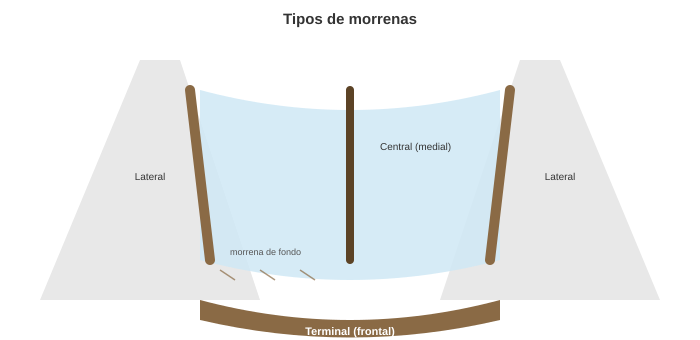
Fig. 42 Tipos de morrenas en un glaciar de valle: lateral, central, de fondo y terminal. Elaboración propia con base en Benn and Evans [2010].#
11. Geoformas de Deglaciación (Retroceso Glacial)#
Estas formas se asocian con el hielo en retroceso y la acción del agua de deshielo (depósitos fluvioglaciales, que sí están estratificados).
Kettle (o Lago de Kettle): Depresión formada por el derretimiento de un bloque de hielo estancado que fue enterrado por sedimentos fluvioglaciales.
Kame: Colina o montículo de arena y grava estratificada, depositada en una cavidad sobre o dentro del hielo estancado.
Drumlin: Colina alargada y aerodinámica (forma de media cuchara invertida) compuesta de till. Formada debajo del hielo en movimiento.
Esker: Cresta larga y sinuosa de arena y grava estratificada. Son los depósitos de un río subglacial que fluía en un túnel de hielo.
Outwash Plain (Llanura Fluvioglacial): Extensa planicie de sedimentos (arenas, gravas) depositados por ríos trenzados de agua de deshielo frente al glaciar.
{kind=link}
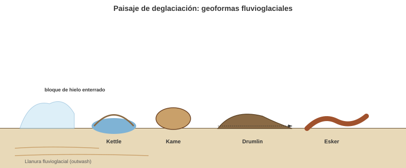
Fig. 43 Geoformas típicas de un paisaje de deglaciación: kettle, kame, drumlin, esker y llanura fluvioglacial (outwash). Elaboración propia con base en Benn and Evans [2010].#
12. El Ambiente Periglacial#
El término “periglacial” se refiere a los ambientes fríos no glaciados, dominados por intensos ciclos de hielo-deshielo en el suelo. A menudo se asocian con el permafrost (suelo permanentemente congelado), aunque en los trópicos de alta montaña (como el páramo), el régimen es de hielo-deshielo diario sin permafrost [French, 2007].
13. Procesos Periglaciales#
Gelifracción (o Crioclastia / Frost Shattering): El proceso más importante. El agua se filtra en las fracturas de las rocas, se congela, se expande (~9%) y actúa como una cuña, rompiendo la roca en fragmentos angulosos (gelifractos).
{kind=link}
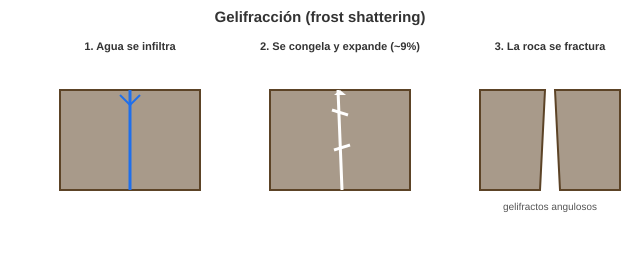
Fig. 44 Proceso de gelifracción: infiltración de agua, congelamiento-expansión y fracturamiento de la roca. Elaboración propia con base en French [2007].#
Solifluxión: El flujo lento pendiente abajo del suelo saturado de agua sobre una capa congelada (permafrost) o impermeable. En los páramos, este proceso es clave en la formación de laderas suaves.
{kind=link}
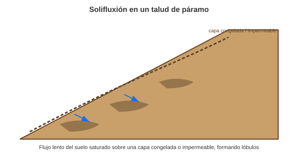
Fig. 45 Solifluxión: flujo lento del suelo saturado sobre una capa congelada o impermeable, formando lóbulos característicos. Elaboración propia con base en French [2007].#
Bioturbación: Aunque los procesos de hielo-deshielo dominan, la acción de organismos (como el crecimiento de frailejones o la actividad de madrigueras) también puede contribuir a la mezcla y movimiento lento del suelo.
{kind=link}
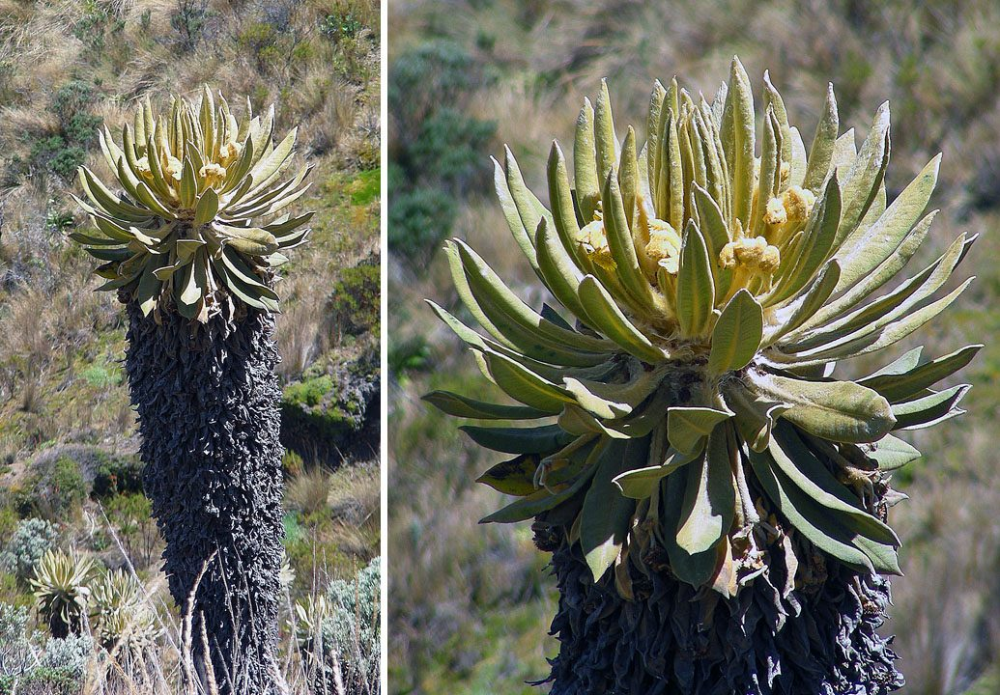
Fig. 46 Frailejón (Espeletia hartwegiana), planta característica del páramo andino cuyo crecimiento y raíces contribuyen a la bioturbación del suelo. Fotografía: Dick Culbert, Wikimedia Commons (CC BY 2.0).#
.jpg){kind=link}
14. Glaciares Actuales en Colombia#
Origen y Tipos: Son glaciares tropicales de montaña, clasificados como pequeños casquetes de hielo (ice caps) que cubren las cimas volcánicas y cumbres de la Sierra Nevada de El Cocuy [Rabatel et al., 2013].
Estado Actual: Quedan 6 pequeñas masas glaciares en Colombia:
Sierra Nevada de Santa Marta (SNSM)
Sierra Nevada de El Cocuy
Volcán Nevado del Ruiz
Volcán Nevado de Santa Isabel (el más crítico, podría desaparecer en esta década)
Volcán Nevado del Tolima
Volcán Nevado del Huila
Tasas de Retroceso: Las tasas de retroceso son de las más altas del mundo. Colombia ha perdido más del 90% de su área glaciar desde mediados del siglo XIX. El área total restante es de aproximadamente 30 km² (datos varían ligeramente año a año) [Rabatel et al., 2013].
{kind=link}
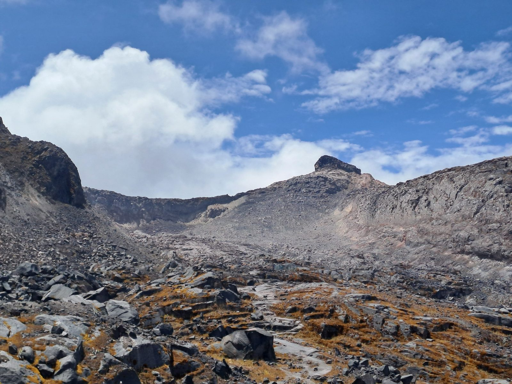
Fig. 47 Glaciar Conejeras, en el Nevado de Santa Isabel (Colombia), fotografiado en 2024, uno de los seis remanentes glaciares del país. Fotografía: Jorge Luis Ceballos, Wikimedia Commons (CC BY 4.0).#
{kind=link}
15. Evidencias Glaciales Pasadas en Colombia#
Última Glaciación (LGM): Durante el Último Máximo Glacial (~21 000 años), la EQL en los Andes colombianos descendió hasta los ~3 000-3 500 msnm. Los glaciares cubrieron vastas áreas que hoy son páramos.
Evidencias: Las morrenas terminales y laterales, los valles en U, los circos y los numerosos lagos (tarns) en parques como Los Nevados, El Cocuy o el Parque Nacional Natural Chingaza son la evidencia geomorfológica inequívoca de esta extensa glaciación pasada.
Taller de Autoevaluación#
Balance de Masa: Si un glaciar presenta una Línea de Equilibrio (EQL) que asciende en altitud año tras año, ¿qué podemos concluir sobre su estado de salud? ¿Está en avance o retroceso?
Erosión Glacial: Explique cómo el proceso de arranque (plucking) y la abrasión trabajan en conjunto para profundizar un valle glacial.
Morfología de Valle: ¿Cuáles son las diferencias principales entre un valle fluvial y un valle glacial en términos de su perfil transversal y su trazado en planta?
Glaciares Tropicales: ¿Por qué los glaciares de Colombia son particularmente sensibles al cambio climático en comparación con los glaciares de latitudes altas (ej. Antártida)?
Sedimentología: Describa las características del till glacial. ¿Por qué es un sedimento tan mal seleccionado?